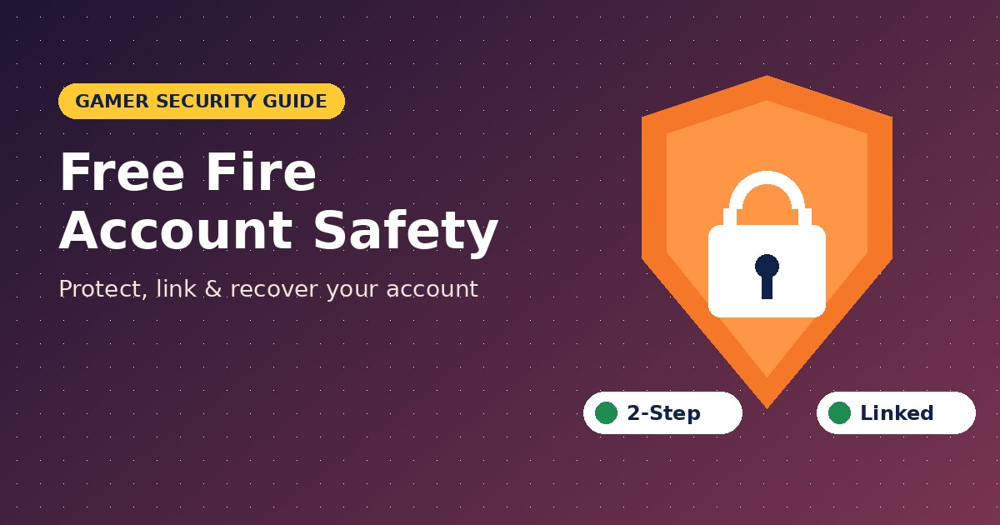
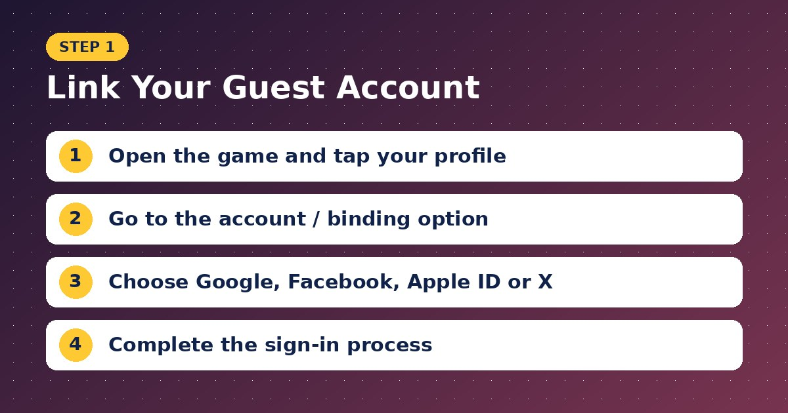
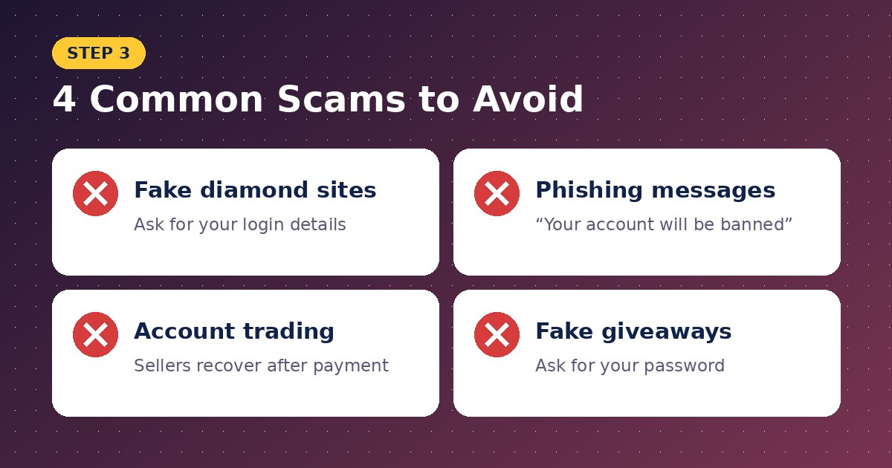

Free Fire Account Safety: How to Protect, Link and Recover Your Account

For many players, a Free Fire account represents months or even years of effort. Rare skins, event rewards, characters and diamonds all live inside that one account. Losing it, whether to a hacker, a scam or a simple mistake, can be heartbreaking.
The good news is that most account losses are preventable. This guide explains how to secure your account, recognise common scams and recover access if something goes wrong. For more Free Fire security guides, visit www.freefiresapks.com.
Why Account Safety Matters
Free Fire accounts are valuable, which makes them a target. Scammers try to steal accounts to sell them, use their items or access linked social media profiles. Many players also lose accounts simply because they never linked them to a login method.
Step 1: Never Stay on a Guest Account
Guest accounts are stored only on your device. If you uninstall the game, reset your phone or lose your device, your progress can be lost permanently.

How to link your account:
- Open Free Fire and tap your profile.
- Go to the account or binding option.
- Choose Google, Facebook, VK, X, Apple ID or another supported method.
- Complete the sign-in process.
Linking takes less than a minute and protects everything you own in the game.
Step 2: Secure Your Linked Login
Your Free Fire account is only as safe as the Google, Facebook or Apple account it is linked to.
- Use a strong, unique password.
- Turn on two-step verification for your linked account.
- Keep your recovery email and phone number updated.
- Never share verification codes with anyone.
Step 3: Recognise Common Scams

Fake Diamond Websites
Sites promising free or unlimited diamonds often ask for your login details. Garena never asks for your password.
Phishing Messages
Messages claiming “Your account will be banned” or “You won a free reward” with a login link are common scams. Always check the website address carefully.
Account Selling and Trading
Buying or selling accounts is risky and against the game’s rules. Many “sellers” recover the account after receiving payment, leaving buyers with nothing.
Fake Giveaways
Social media pages pretending to be official may ask you to share your account details to “receive rewards.” Official giveaways never require your password.
A full guide to recognising phishing pages is available on http://freefiresapks.com/.
Step 4: Avoid Risky Apps and Mods
MOD APKs, aimbots and “injector” apps can contain malware designed to steal login information. They also risk permanent bans. Only install the game from the Google Play Store or Apple App Store.
Step 5: Be Careful on Shared Devices
- Log out after playing on a friend’s phone.
- Do not save your login on public or shared computers.
- Avoid letting others “boost” your rank by giving them access.
How to Recover a Lost Account
If you forgot your login method:
Try each login option (Google, Facebook, Apple and others) one by one. Your account will load when you use the correct one.
If your account was linked but you cannot access it:
Recover the linked account first. For example, reset your Google or Facebook password using their official recovery process.
If you believe your account was hacked:
- Secure your linked social media or email account immediately.
- Change passwords and enable two-step verification.
- Contact Free Fire customer support through the in-game help centre or official support website.
- Provide details such as your player ID, account name, purchase records and the date you lost access.
If you played as a guest and lost your progress:
Recovery is very difficult, which is why linking is so important.
Signs Your Account May Be Compromised
- Unknown logins or device changes
- Missing items or diamonds
- Changes to your nickname or settings
- Messages from friends saying you sent strange links
Act immediately if you notice any of these signs.
Frequently Asked Questions
Can Garena recover a guest account?
In most cases, no. Guest accounts are not tied to a recoverable login.
Will Garena ever ask for my password?
No. Official support never asks for your password.
Can I change my linked account later?
Some binding options allow changes, but always secure the existing link first.
Final Thoughts
Protecting your Free Fire account is simple: link it, secure your login, avoid suspicious websites and never share your password. These small habits can save you from losing years of progress.
For more safety guides and recovery tips, visit www.freefiresapks.com or explore the account security section at http://freefiresapks.com/.